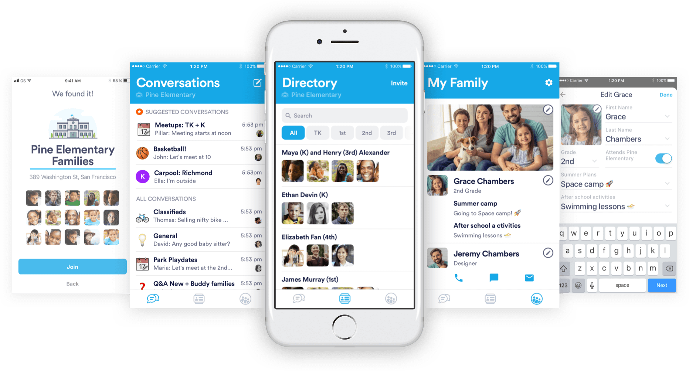

Pillar

Schools Parents Community
Design - 2017
Pillar connects parents with other parents in their school Community.
The client hadn't had any design work on their app. They needed to execute a redesign and polish onboarding and UX flows. The client also needed design guidelines and sketch symbols to extend the features of the app on their own after the end of our contract.
Built with Sketch